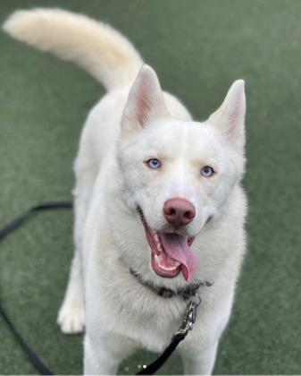
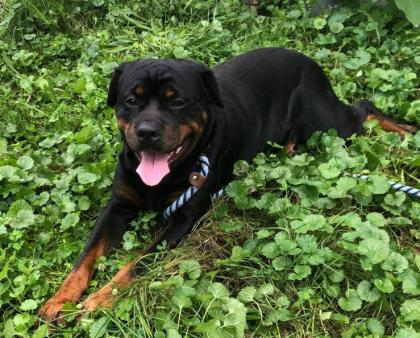
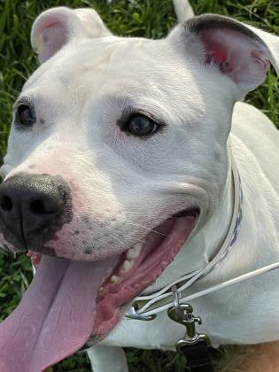
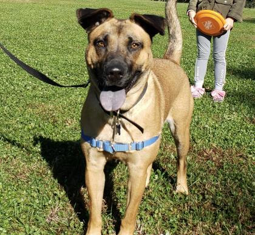
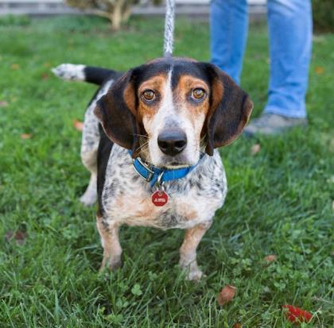
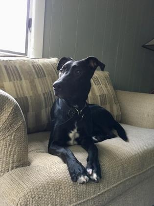
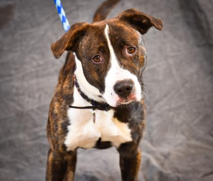
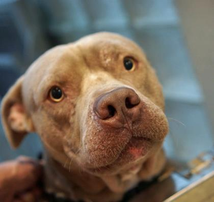
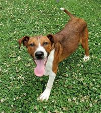

Addison
Addison is a busy, energetic girl who wants to play, play, play! She loves nothing more than playtime with any kind of toy (stuffies, tennis balls, tug toys, you name it!). She brings them to any human in the vicinity to engage with her in a good game of tug, or a game of fetch. A bit of general training would do wonders for this busy lady, and help her harness her energy in a positive way. She's an intelligent gal and super treat motivated so should do great with training! She loves treats so much and can even catch them in mid air. She can be selective about doggie friends, so we recommend a meet and greet if there is another dog in the home. Come meet this gorgeous gal!
Chico
Chico is an affectionate dog who will climb in your lap and wiggle around for pets. He enjoys playing with toys and particularly tug. This boy is a sensitive soul who needs understanding who would do best in a quiet, adult only home.
Dominic
Dominic is very gentle, very sweet. He lifts his paws to you to seek affection once comfortable with someone. However he is a shy boy who will need a patient adopter to help him feel comfortable and safe.
Kanga
Kanga is an exuberant, friendly and toy-loving girl. She walks nicely on leash and co-existed fine with another dog. Kanga would be happy in a home that allowed her to play with toys 24/7!
Missy-Elliot
Missy Elliot is here to jam with you! This sweet girl is an independent gal. She's full of vim and vigor and loves to play with toys, even by herself. She likes to play fetch and will wait for a toy to be tossed, wait to long to throw it and she'll let you know. She has a cat-like personality that is and independent free-sprirt. She is fairly low maintenance and a bit of a couch potato. If you're looking for a friend to hang out with who doesn't ask too much from you Missy is your gal. Toss on some tunes and come join Missy Elliot's music today! If you are interested in adopting Missy please reach out to her foster at risson@wanadoo.fr
Mojo Jojo
Mojo Jojo is a social and cuddly dog, but also very energetic. He would love a family that will be interested in training and other fun activities to keep him busy.
Paisley
Paisley is a shy but sweet pup who enjoys being close to her person for petting and needs a loving and patient owner who can spend time with her to build a special bond. She may like to live with another dog, so bring yours to the shelter to see if they hit it off! For more information or to inquire about adopting Paisley, please contact her foster at: deannapereira17@gmail.com
Pebbles
Pebbles came to us originally through our Waystation Program with a litter of puppies who have all since found their forever homes. Her foster family reported that she is sweet, loves to be pet, and was a great, attentive mom to her babies. She can be a little nervous initially with strangers, so it may take her a moment to warm up to new people at first. She can be helped along with those unsure feelings with some reassurance and some high value treats as well. We believe she would do best in a home with teens or no children, and we recommend a meet and greet if there is a current dog in the home already.
Vito
Vito is a young boy who will do best in a home with a patient adopter willing to help him overcome the bit of worry this sweetie seems to carry with him. He will benefit from general training, and it will also help build and strengthen bonds between him and his new owner. He does truly enjoy spending time with people, and we believe he will truly blossom once given correct training and guidance in his new home. We think he would do best in a home with kids over the age of ten at this time, as he can get quite excitable when he first meets new people. This young boy is just looking for a fresh start, and we're excited to see how truly wonderful this pup's future will be!